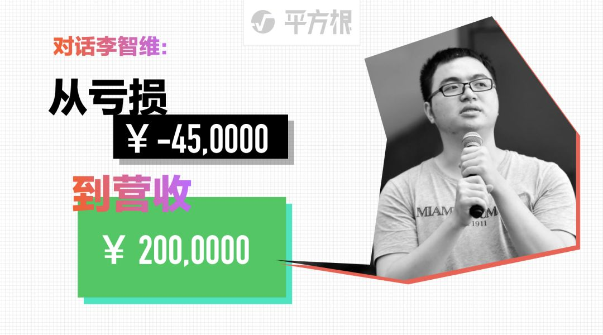
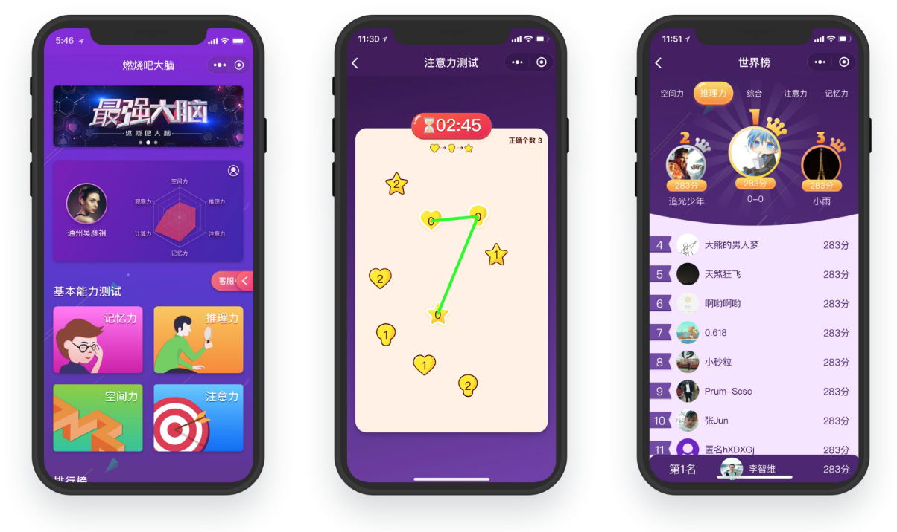
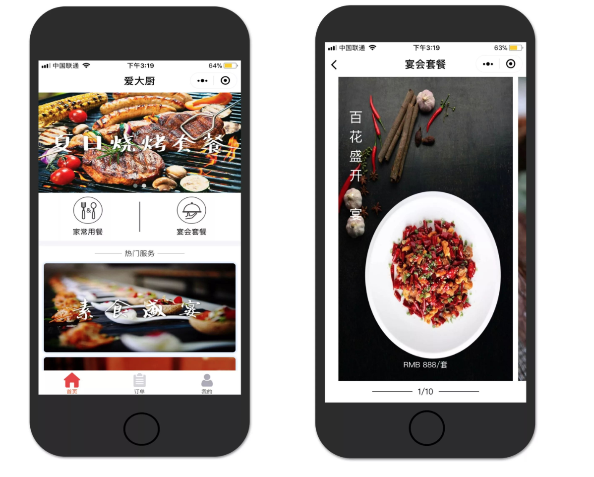
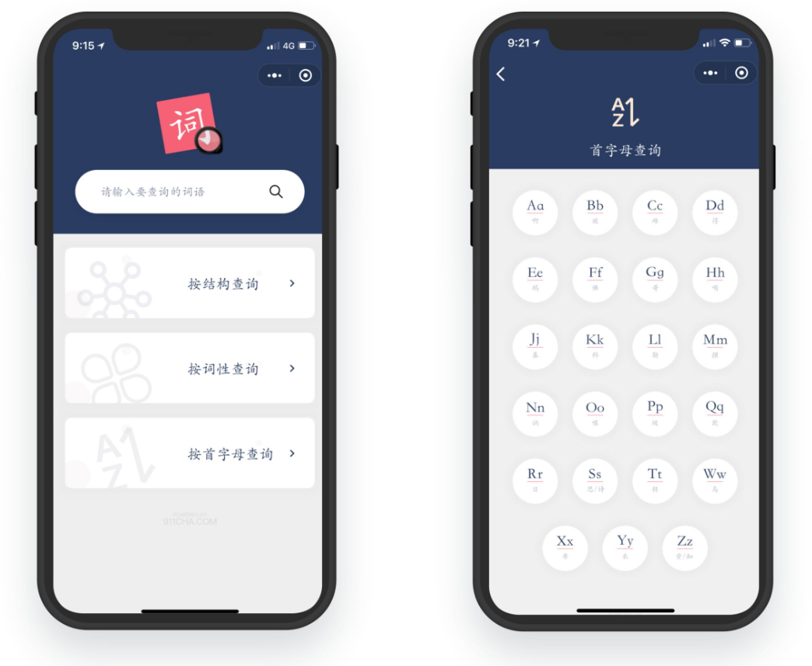
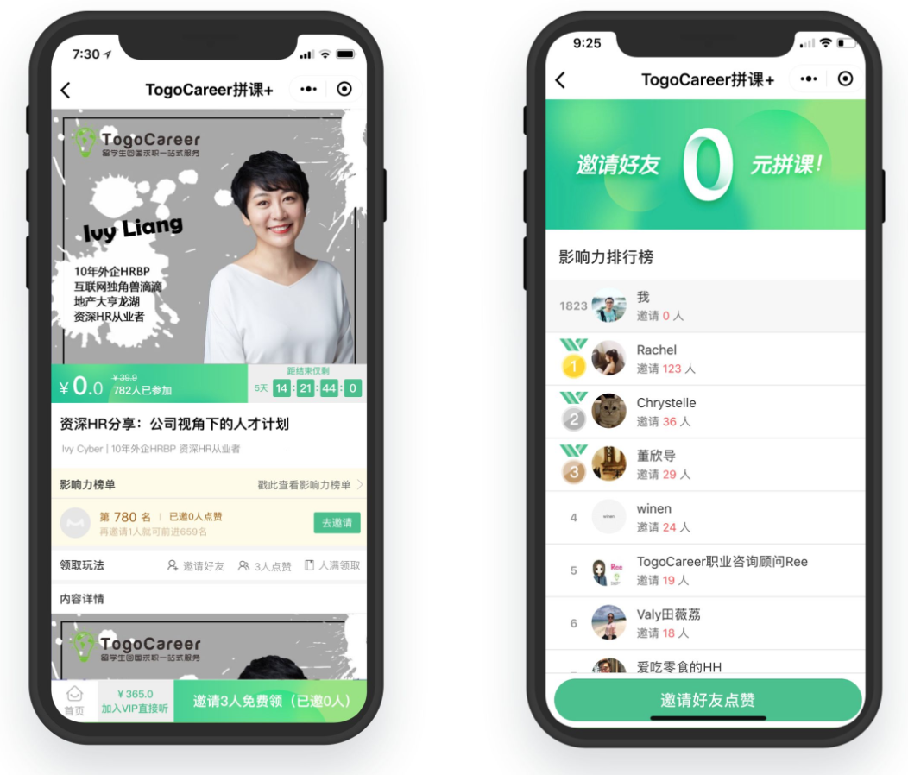
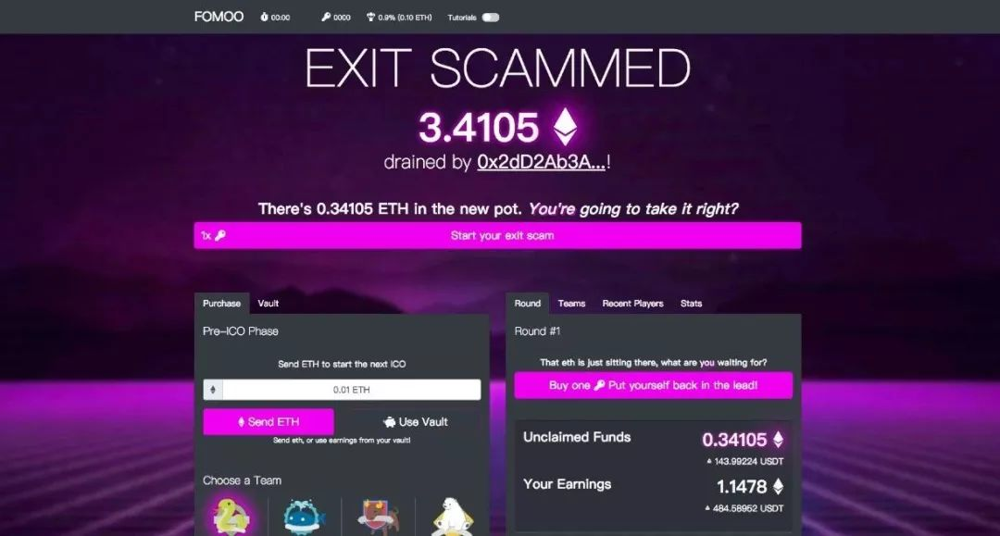

從虧損45萬到營收200萬 | 原創，AI翻譯

以往一天至少一條朋友圈，公眾號持續更新推送的創業青年，去年22歲高調的小伙子李智維，已經好幾個月未在朋友圈發出任何聲音。今年年初，網友說他也不小了該做些實事了。他覺得網友說得確實有道理。今年23歲的他開始低調起來。
今年，他從技術直播平台轉為做技術軟件外包，走上了新的起點，給客戶提供設計和開發整套服務，幫助客戶完成小程序、App、網站、人工智能產品、區塊鏈產品的製作，軟件外包客戶有教育獨角獸公司小猿搜題、在線公考教育公司粉筆網、人工智能創業公司中科視拓等20多個，為他們完成了40多個各種項目。
公司轉型做軟件外包以來，2018年上半年營業收入超過200萬，利潤超過50萬，全職和兼職員工最近也達到了15個。雖然數字很小，但是這一年裡他成長了，有了新的認識，新的感受。
如今，李智維再次開放地面對大家，我們進行了以下的訪談。

江蘇衛視《最強大腦》節目
官方小程序《燃燒吧大腦》
與攬石傳媒設計公司合作
給客戶提供設計開發整套服務
項目已獲得客戶授權展示
問：你為什麼認為你的外包是有需求的？
李智維：第一當他們手頭上有個項目，有想法要去嘗試一下，如果他們要去招聘一整個團隊的話，在目前招聘工程師成本很高的情況下，找外包很多時候是一個便宜的方案。
我們的報價在市場上還是傾向於比較實惠的，所以找我們一個好處是便宜，另外一個是靈活。如果你要招全職工程師的話，你要一直養著，而不能說讓他們做一個項目，然後項目上線之後就把他們炒了。我們作為一個靠譜的臨時工還是挺剛需的。
其次有一些我們合作的大公司也會把一些項目外包給我們，為什麼呢？假如你有一個非常好的外包合作夥伴，知道他們幹活很靠譜、質量很好，就像公司內部的人一樣，有時公司內部沒有人力來做一個項目，你會選擇把項目交給靠譜的外包合作夥伴。
內部做的話往往成本是很高的，工程師的工資都兩三萬。而像我們這種外包的方式，成本是比較低的。為什麼我們的成本低呢？一個原因是我們通過項目分成的激勵制度，更好地使用人才。 我們可以安排一個人把前後端的技術活都幹了，在其他公司裡要三個人做的工作，我讓一個人做了，而這個人我給他兩倍的錢。
比如說招3個工程師要6萬塊錢，而我就給這個工程師4萬塊錢，他一個人全部做掉這些工作，他會很開心，我們也省了錢。這麼做，也同時減少了溝通成本，有時比兩三個人還要高效。
但是在公司裡這樣是不可能的。公司裡會有能力很強的人，也能夠把這些活全做了，但是這樣太累了，而且也沒有漲工資。所以這個工程師做了後端，前端就要另外一個人做。公司裡的激勵制度是：每個月發多少錢，我做後端這一塊也是這麼多錢，我全部做了也是這麼多錢，所以工程師是沒有這個動力去做這麼辛苦的活的。

《愛大廚》小程序
與愛大廚公司合作
幫助客戶做小程序前端
項目已獲得客戶授權展示
另外，我們有一部分工程師是兼職，他們的報酬會比全職的低一些。一個公司有的職位是活不多的，但他們作為全職工程師卻要一直養著，支付一整個月的工資。而我們這邊是按照工作量算工資的，一個項目可能兩星期就做完了，所以我們就按照兩星期的工作量去給錢。其次，我們的工程師都是比較踏實的人，他們在大公司幹正職，而在我們這邊兼職一個月能掙多一兩萬就很開心了。但是要招全職的，現在北京好一點的工程師，工資都得在2萬以上。
同時，跟大公司合作的話，他們對接的人都是很多的，而在我們這裡，一個人就可以跟對方的三五個人對接。還記得做趣直播第一次創業時，我一個人在幹那會兒，公司還是可以盈利的，因為我一個人把推廣和代碼的活幹掉了。雖然說盈利不多，一個月流水只有幾萬塊，利潤只有一兩萬塊錢。但是我積累了不少用戶，算上用戶價值的話，我本質上是盈利不錯的。
所以我很早就知道，在公司越多全棧的人，什麼都可以做，一個人幹掉很多事情，公司這樣才能生存得比較好。一個人既能做測試，又能做文案，又能做市場，還能做銷售。小公司裡需要相對全能的人，把所有的活都幹掉，這個人能幹很多個職位，那個人也能幹很多個職位，要徹底地把一個人的時間給填滿。如果他是做測試的，請讓他整天都在做測試，一直都有活幹。如果他是銷售，請讓他整天在銷售。當銷售的任務不多的時候，讓他也去做測試。
以我的親身經歷來說，你真的要掙回你的工資是很難的。當時我也覺得我的能力不錯，畢竟我是一線互聯網公司出來的。我創業的時候，因為有了一些圈子裡的人脈，可以讓他們過來直播，但我還是花了半年的時間，才做到一個月流水三四萬，盈利一兩萬。
我已經用了不少資源，卻只掙了一點錢。由此可見，要想掙到錢，在我個人看來，真的要付出很多。在我們公司裡，我付出了很多，我的同事也是一樣，就連那些很厲害的企業，他們也是很辛苦的。就像阿里、華為，他們的工程師也是要經常加班的，所以他們掙很多的錢。
問：做外包的過程中，你覺得碰到的最難的是什麼方面？
李智維：公司規模增大的挑戰吧。我們做的一個直播答題的項目，那是我們第一次作為工程師做外包。那時候只參與一個項目，可以很好地做下來，但是後來項目多了之後，比如說有10個項目，不可能是跟一個項目的時候一樣，自己一個人是管不過來的，你得讓別人管，不能每個項目都自己全程參與，所以會有整個項目變多、規模擴大後的挑戰。
每個人都是不同的，沒有辦法讓項目經理們完全按照你的思維、方式去做事，甚至完全沒有技術背景的項目經理去做，可能會遇到一些其他問題，比如如何與客戶交流等等，不可能一句一句都按你的想法來說，那麼怎麼才能讓別人像你本人一樣呢？我逐漸也意識到這是不可能百分百受控制的。

《漢語大詞典》小程序
與攬石傳媒設計公司合作
給客戶提供設計、開發整套服務
項目已獲得客戶授權展示
於是我們現在逐漸形成了一定的流程，讓整個運作在我的控制範圍內。比如一個項目會和客戶溝通，繪製出思維導圖，分析項目功能要點，形成報價單，然後跟客戶談合作。這個過程中，我意識到從管理的層面上來說不能要求這麼細，只要去看結果就行了。比如說銷售跟客戶談項目的時候，不要去管他對客戶的每個問題怎麼回答等等，而是看他談下來了沒有，沒談下來的話，原因是什麼，我們要去關心最重要的問題。
總結來說就是從我帶兩三個人做一個項目，到團隊二三十個人同時做十來個項目這樣的挑戰，怎麼讓公司流程化，怎麼給客戶最好的體驗，即使公司規模擴大了，每個員工還是能像創始人一樣給客戶最好的體驗。
問：未來有沒有什麼計劃？
李智維：從同時做10個項目，到同時做30、40個項目，這也是我一直在思考的問題。應該盡量做更標準化的流程，就像流水線生產一樣。
我們公司現在一部分工程師是全職，還有一部分是兼職，我們以後會繼續走這條路，找一些兼職的工程師，而不全都是全職的，有很多好處。
比如說誇張到1萬個項目來說，就是做信息匹配。我們是作為一個信息平台，所以真正寫代碼的不是我們，但我們知道並且能找到寫得好的工程師。一部分核心的我安排全職的工程師來做。另外設計的工作影響著後面開發的進度，我會盡量安排全職的去做。其他的工作，比如說前端網頁、客戶端開發、後台管理，可能安排兼職工程師去做。
以後進一步擴張了，更是沒有辦法所有的事都我們自己來做，所有代碼都我們自己來寫，我們要做的就是信息匹配，找到那些工程師，他們有房貸，有壓力，而且比較空閒，願意兼職，但是甲方公司不知道這些信息和沒有這些人的聯繫方式，所以，我們就是來撮合工程師給甲方幹活的。
例如淘寶，商品並不是淘寶自己提供的，它很重要的一個能力是信息匹配，賺的就是這部分錢，也因為這樣能夠做成一個大平台。淘寶可以做好1萬個商家的信息匹配，那我們也可以做好1萬個項目的信息匹配。
當項目越來越多時，我們會做一個內部管理系統，1萬個項目的進展、負責人、組成人員都會進入系統，到時候在系統內可以一目了然所有項目的情況，而且只要對接每一個項目的項目經理，做一個輕度的監管，不用去具體管理每個成員。

《TogoCareer拼課》小程序
項目已獲得客戶授權展示
如果遇到某些項目經理不合適等情況，可能項目會做得不太盡如人意，我們就會進行監管，使得能夠及時進行人員更換。在這個過程中也會知道哪些團隊是靠譜的、哪些人是靠譜的。我們與這些靠譜的人，全職的或是兼職的，形成長期緊密的關係。
另外一個，計劃先多接一些比較小的項目，5到8萬的項目，兩三個工程師就可以搞定。這樣比較小的項目，我們有信心就算它完全失敗也可以有利潤再做一次或者用其他項目的利潤補貼這個項目。同時相信項目多了，我們能積累更多客戶，擴張起來。
問：看來目前是你一個人在做管理、統籌，基本都要顧著，那會不會有忙不過來的時候，會不會服務不好客戶？
李智維：現在實際情況是這樣的，我們有3個人在管理所有的項目，目前大概有10個項目，基本有一半項目的工程師十分積極主動，基本不需要花時間管理，只有剩下另外一半約5個項目需要去推動，目前大致可以管得過來。
當然我們3個人在管理的同時，也要談新的項目，所以時常也非常忙。這時我們會按照優先級，會先服務好已經成單的客戶，對於還在談的潛在客戶，盡量去服務好。當壓力比較大的時候，我們會考慮增加人手。
我們會逐漸形成這樣扁平化的組織結構，底下是具體寫代碼、做UI設計的人，然後是小組負責人，最後再往上去是管理層，形成一個三級的組織架構。
問：那前面提到現在工程師、設計師等等，有部分是兼職，那是怎麼找到他們的？
李智維：我們一開始是做趣直播，一個技術直播平台，也有講設計之類的課程，這個直播平台擁有大概近3萬的互聯網行業的工程師設計師，近1/3和他們加了微信，聊到他們的背景，有些是在京東、阿里等大公司，還有各種創業公司的。
之前聊的過程和朋友圈的互動中，他們了解了我，發現我們現在在做外包，就可能過來合作，漸漸覺得收益不錯，也就加入了我們團隊成為全職。
人和人都是循序漸進熟悉起來的。例如，問他一個技術問題能不能幫忙解答一下，再到給2000元佔用一下他的一個週末，再到給2萬用他一個月的兼職時間，如此慢慢建立更多合作。
同時可以去問問周邊比較熟悉的朋友，去問他們周邊有沒有想兼職的、能幹的工程師。這就要你儘管去問，多嘗試，總是會問到。接下來就是用錢回報他們的勞動力，形成第一次合作，漸漸地長期合作。
我們現在有三四十個隨時可以找他們合作的人，那我可能問過更多，找上來也挺多，有時想不起來比較可惜沒和一些朋友合作，他們也非常優秀。然後具體聊過五六十個，在這個過程中又進行了篩選，篩選掉那麼十多個因為價錢或時間原因不太合適的，然後留下來如今的三四十個有過合作，有十到二十個合作過多次。

區塊鏈遊戲FOMOO
項目已獲得客戶授權展示
問：那客戶是否基本上也是這樣來的？
李智維：對，是這樣。我之前做直播平台，向所有的用戶放出微信，加微信就可以拉你進群和技術講座的主播直接交流。他們加了我的微信，知道我是這個平台創始人，看到我朋友圈一些直播消息以及團隊、平台的故事。
這些微信好友們無論誰來問一些問題之類，我都會抽空回答，然後我朋友圈也基本不屏蔽任何人，看到有意思的內容也會點贊，以開放的心態來交流。這是很重要的。一開始什麼都沒有的時候，可以選擇廣交朋友的方式，時不時找他們做些什麼。
我們很難保證一生只做一個產品，創業也有可能會經歷失敗，但你要積累自己的用戶、客戶。拿自己舉例：微信兩個號加滿好友之後，大約可能有少部分人過段時間會把我刪掉，但是還有五六千人保持關注度，朋友圈最多的也會有四五百人點贊。那就是積累下來的朋友。
前段時間和朋友聊到一個事情，就是說你好友的數量，100個、1000個、5000個，本質上是一樣的，就從這掙錢的角度來說，是沒什麼不同的，因為你沒有和他們一起掙錢。我以前做趣直播自己寫代碼、做廣告，自己一個人幹這些，他們僅僅是直播用戶，本質上來說還是自己一個人在掙錢，很辛苦。但你和100個人、5000個人合作起來掙錢那就會很不一樣。
所以，你要讓你的微信好友要么是你的同事，要么是你的客戶，你就能跟10個、50個、100個人緊密地合作。比如馬雲有幾萬個人執行他的點子，還有成千上百萬的商家在他的平台上，所以馬雲跟很多人合作，掙很多錢。
微信好友，並不在於數量，而在於質量以及與你合作的緊密程度。我現在就是盡量多與人合作，有什麼不懂就去問別人，與優秀的人建立聯繫。所以客戶就是漸漸這樣來的，畢竟大家都在互聯網圈子裡，他們都來自朋友圈，或者朋友圈的某個好友介紹過來。
當然這也看你做什麼，如果你是科學家，只需要幾個一起做研究、寫論文的合作夥伴，做好自己的事，做好核心技術就好，而如果你創業的話可能需要很多人的幫助。
這個事情也與個人性格也有關係，比如我，與很多人聊並不會覺得很累，喜歡多交一點朋友，對人感到好奇，從中學時代就是這樣，初中那會跟一個年級的大多男生都認識。
一個人要做自己熱愛並且擅長的事 ，就不會那麼累。換做別人要去跟幾千個人聊天可能就會不樂意，而我就覺得去認識不同的人，去了解他們是一件有意思的事。廣交際這個事也是從我比較小的時候就開始這麼去做，習慣了很多年，再加上自己學編程技術出身，所以可以說軟件外包公司的創業方向很適合我做。創業，得先做自己擅長的事情，發揮自己的優點。
問：有這麼多好友，那你是怎麼與這些好友保持聯繫，或者說讓他們對你保持關注的呢？
李智維：我是一個比較開放的人，沒有什麼秘密，很喜歡坦誠的感覺，甚至情感上的事、遭受的一些困境、一些生活等等也會分享出來。你會發現這些事情，多數人僅僅是和個別好朋友、親密的人講，但你如果和所有人講，這些人更了解你，你與所有人交朋友，那麼從掙錢的角度來說，幾率就增加了很多。
不僅僅是創業者，這個習慣可能對其他工作的人也會有用。比如一些科學家也寫自己的博客等等。在這個時代擴大自己的影響力，打開自己的內心與別人交流，與別人分享自己的工作，是很好的事情。
問：那你有客戶大多來自於多微信好友，那麼他們是怎麼被發展為你的客戶的呢？你怎麼讓他們把項目給你做？
李智維：很簡單，從我理解的微商的運作來看，微商發展客戶是天天在朋友圈冒泡，發轉賬記錄等等。首先是要讓大家知道我在做這個，那麼你要找我做就來私信我，隨時找我。你會發現比如一些賣二手車的，直接把微信名改為二手車加手機號，很直接，意思是：來吧，隨時打電話過來吧。
那其實我們現在的渠道是微信，如果是公眾號等其他渠道也是一樣，首先要看到廣告或者我們的廣告被看到，要么是我們主動去問，主動發廣告，要么是看到朋友圈或者別的地方在問有沒有人認識什麼外包團隊，看到別人的廣告，那這樣就是一個信息匹配過程。要么是我們被動地看到這個信息，要么我們主動發布這樣的信息被別人看到。慢慢地，更多人知道了，生意也就來了。
除了去多冒泡等等還有通過一些間接的人脈，或者合作過的工程師介紹項目過來，或是朋友介紹過來，我給介紹的朋友提成，形成一個穩定的渠道。還有是老客戶介紹過來，或者老客戶做新項目。這樣來的項目都是有信任度的，也是能夠抓住客戶，很快成單的。
問：如果有老客戶合作很愉快，會不會考慮長期合作？
李智維：當然是會的，